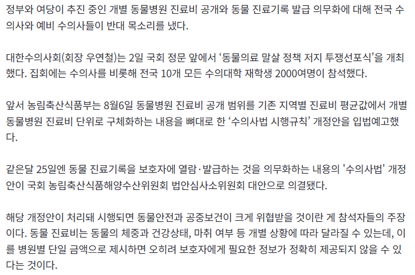

동물병원마다 가격이 ㄹㅇ 천차만별인걸로 알고있음
공개 해야지 ㅋㅋㅋㅋ 쫄림?

동물병원마다 가격이 ㄹㅇ 천차만별인걸로 알고있음
공개 해야지 ㅋㅋㅋㅋ 쫄림?
동물병원 원장 혼자하는데 포르쉐가 색깔별로 2대더라
수술비 기본 몇백인거 ㅈㄴ 괘씸함
그 동안 달달하셨죠?
저가 지금이라도 바로 안잡으면 가격 더 올라감 ㅋㅋㅋㅋㅋㅋ
골햄 아파서 엑스레이찍고 약 받았는데 먗십만원나왔는데...
근데 원인을 모른데 ㅋㅋㅋ
전손처리하는게 가성비라 알아볼 생각을 안한것. 이상
골햄이라길레 골든리트리버인가? 했네 ㅋㅋ
그래 뭐...
백번 양보해서 밥그릇 싸움이니 이해는 하지만
좀 더 건설적인 협상을 하는게 좋을것 같은데
월세 비싼 곳은 더 받고 아닌 곳은 덜받을 수도 있는데
비싼 곳은 기피되고 최저가에만 진료 몰려서 폐업당할까봐 시위하는 건가?
나 수의사 아님, 일일히 병원 단가 물어보고 진상 취급 받고 싶지도 않고, 치료 받고나서 복채비 부르듯 과청구 당하는 거 원치 않음
누군가에게는 반려동물을 가족이라는 명목으로 손님들한테 존나게 가스라이팅 해놓고 가족한테 들어가는 돈이니까 아끼지 말라. 어쩌고 저쩌고 하면서 달달한 돈 그동안 많이도 뜯어왔는데 이제 그걸 막겠다고 하니까 발작버튼이 눌리지? ㅋㅋㅋㅋㅋㅋ
아 싯가에요~
욕심이 끝이없다
공개를 하든지
정찰제를 하든지
요즘은 안그럴거 같은데 예전엔 코숏은 진료비 디스카운트가 있기도 하고 그랬음 수의사 재량인거 같더라
동물병원 여러군대 다녀보고 제일 합리적인곳으로 가시길. 바가지 씌우는놈 만나면 답도없음.
같은 치료하는데 5배 차이낫엇음
진료기록 발급 의무화가 문제임
동물약을 제한없이 약국에서 살 수 있는 시점에서 자가치료가 가능해져버림
진료비는 몰라도 기록발급은 일반 약국에서 판매 가능한 동물약 먼저 정리하고해야지
정도껏 해먹어야지
사람도 진료비 다 뜨는데 개새끼 털바퀴새끼는 뭐라고 안뜨는거임? 좆같은새끼들 ㅋㅋ
ㅋㅋㅋㅋㅋㅋㅋㅋㅋㅋㅋㅋㅋㅋㅋ
저거시 한국에서 경험할수있는 미국식 의료 아니겠나?
ㅋㅋㅋㅋㅋㅋㅋㅋㅋㅋㅋㅋㅋㅋㅋㅋㅋㅋ
보험생각해도 사람이랑 비교해서 존나비싼듯 ㅋㅋ
넥스가드 동물약국에 공급 안되게 막은것도 수의사들이지
미용실도 가격 다 공개하는데 너넨 왜 안되는건데 ㅋㅋ
엑스레이한번찍는데 30만원 달라더라 애미뒤진새끼들
하와이에서는 한번 찍는데 천불가까이 깨짐
근데 주마다 가격 다 틀림
근데 엑스레이 기사 없으면 기다려야됨.
한국이나 미국이나 좃같음
애미 만수무강하려면 얼마받아야한다고 생각하심?
한 병원에서 병원비 좀 싸게 부르면 근처 동물병원들에서 항의함
이건 솔직히 일괄되게 정해야 함.
어느정도 비쌀 수는 있는 건 감안하지만
작년 말 ~ 올 초 설치류 병원데리고 다니면서 400씀
내가 가는곳이 ㅈㄴ 비싼거 알고있는데 불가항력인게
특수동물이라 진료보는곳이 없음
세부 처치 항목? 이런공개도 없고
그냥 영수증에 70 띡 박혀있음
저런건 투명하게 공개해야된다고 본다
부랄따개 새끼들 지랄하네 ㅋㅋㅋㅋ
사람도 건강 상태에 따라 진료비 천차만별인데 왜 공개함????
쫄리니까 저 야랄이 나지 ㅋㅋㅋ
쫄리는 거 맞음
이제 느그를 지지하는 사람들 몇은 확실히 떨어져 나갔다
가격 후려치는 것도 적당히 해야지
얼마나 해먹었길래 이렇개 대놓고 ㅋㅋㅋㅋ
근데 가정에서 키우는 동물은 같은 품종이라도 덩치나 성격이 천차만별인데 일괄 적용이 가능할까 싶긴 함 산업화된 동물(소 닭 돼지같은)은 규격화되어 있으니 가능하지만
워딩이 ㅈㄴ 폭력적인데 ㅋㅋㅋㅋ